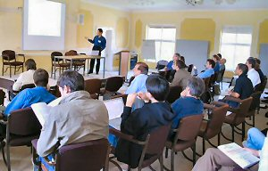

Attendee List
- Rui Abreu, Delft University of Technology
- Stephen Allott, ElectroMind Ltd
- Andrea Arcuri, University of Birmingham
- Paul Baker, Motorola
- Dave Binkley, Loyola College in Maryland
- Kirill Bogdanov, The University of Sheffield
- Marat Boshernitsan, Agitar Software
- Leonardo Bottaci, University of Hull
- Florence Charreteur, INRIA
- John Clark, University of York
- Myra Cohen, University of Nebraksa-Lincoln
- Lydie du Bousquet, LIG
- Sigrid Eldh, Ericsson AB
- George Elms, LDRA
- Peter Fagan, Vizuri
- Xin Feng, University of Limerick
- Gordon Fraser, Graz University of Technology
- Paul Gerrard, Gerrard Consulting
- Eduardo H.S.Aranha, Fedueral Unviersity of Pernambuco
- Mark Harman, King's College London
- Youssef Hassoun, King's College London
- John Hatcliff, Kansas State University
- Rob Hierons, Brunel University
- Claire Hinchliffe, EPSRC
- Mike Holcombe, University of Sheffield
- Liang Huang, University of Sheffield
- Florentin Ipate, University of Pitesti
- Tao Jiang, King's College London
- Mathai Joseph, Tata Consultancy Services
- Pauline Kan, Consultant
- Rahul Kelkar, Tata Consultancy Services
- Kiran Lakhotia, King's College London
- Zheng Li, King's College London
- Konstantinos Liaskos, University of Strathclyde, Glasgow
- S Afshin Mansouri, King's College London
- Chris McCulloch, King's College London
- Phil McMinn, University of Sheffield
- Jani Metsa, Nokia
- Stuart Reid, Cranfield University
- Marc Roper, University of Strathclyde
- Daryl Shannon, University of Texas at Austin
- Anthony Simons, The University of Sheffield
- Ben Smith, North Carolina State
- Clive Stewart, IBM UK
- Arne-Michael Toersel, University of Applied Sciences Stralsund
- Peter Thanish, Scapa
- Arne-Michael Toersel, University of Applied Sciences Stralsund
- Mark Trakhtenbrot, Holon Institute of Technology
- Mark Utting, University of Waikato
- Neil Walkinshaw, University of Sheffield
- Stefan Wappler, Technical University of Berlin
- Shin Yoo, King's College London
- Yuanyuan Zhang, King's College London